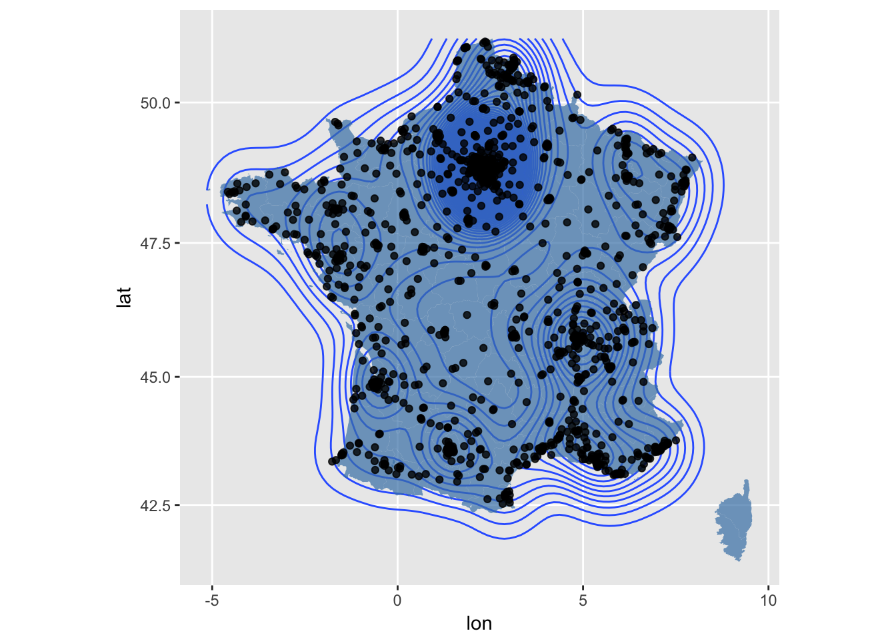
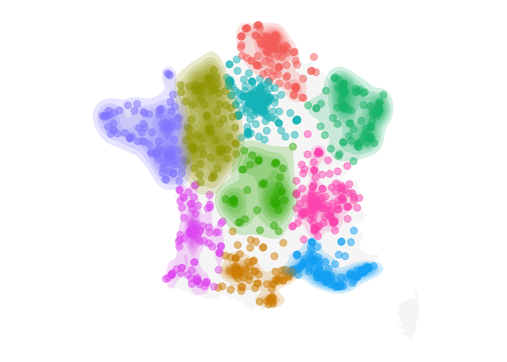

Implantation de McDonald’s en France
En viusaliant les adresses des McDonald’s en France, on peut se rendre compte à quel point son réseau de restaurants est réparti de façon homogène et saturée sur tout le territoire français.
1 Nombre par département
On peut visualiser le nombre de restaurants par département.
2 Par population
Quand regarde maintenant le nombre de restaurants par 100 mille habitants, on peut observer cette remarque homogénéité sur tous les départements.
On peut faire un histogramme pour les tous les départements

3 Densité

4 Clustering

Copyright © 2016 Blog de Kezhan Shi